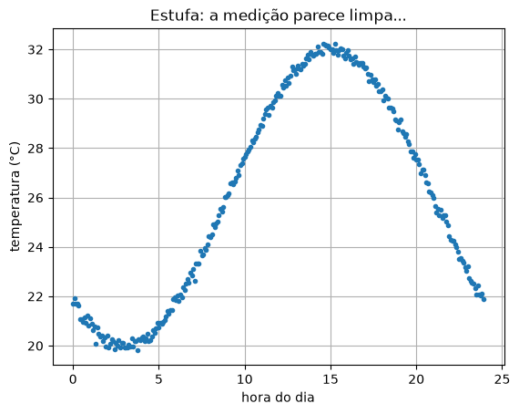
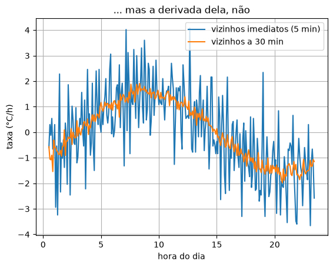
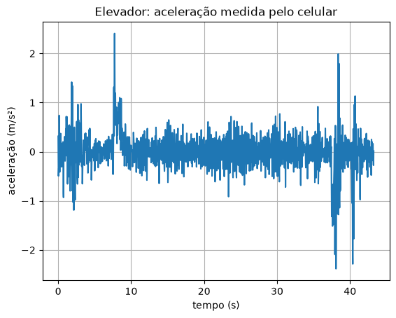
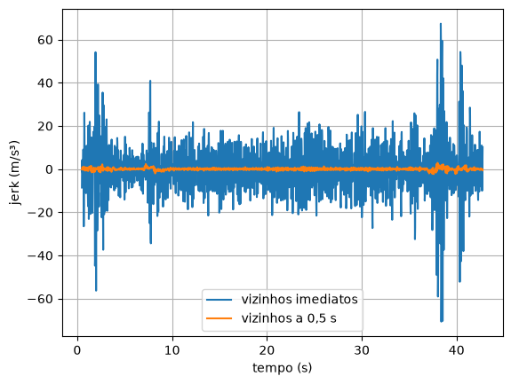
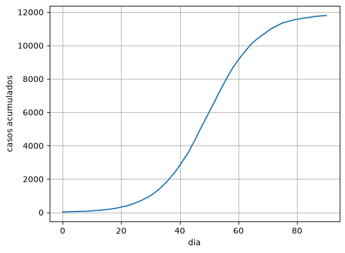
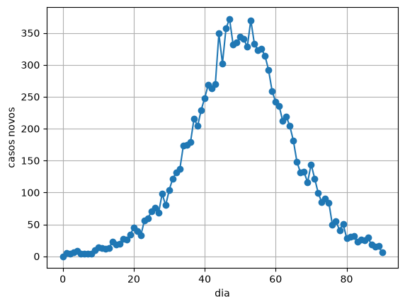

3. Derivando dados medidos¶
No capítulo 2, a função \(f\) estava sempre à mão: dava para calcular \(f(x+h)\) com qualquer \(h\). Na prática, quase nunca é assim. O que chega é uma tabela: o tempo de passagem de um atleta a cada 10 metros, a temperatura que um sensor registra a cada 5 minutos, a aceleração que o celular mede 50 vezes por segundo, os casos de uma doença publicados dia a dia. Não há fórmula por trás, e não dá para escolher \(h\): o \(h\) é a distância entre as medições, e pode nem ser constante.
As mesmas fórmulas do capítulo 2 funcionam aqui, com três cuidados novos: espaçamento irregular, as bordas da tabela e, o mais traiçoeiro, o ruído.
Quando só temos a tabela¶
🌍 Contexto: os tempos parciais de uma corrida
Nas grandes provas de atletismo, câmeras registram o instante em que o atleta
passa por cada marca de 10 metros. São os tempos parciais. Os de Usain
Bolt no recorde mundial dos 100 m (Berlim, 2009) foram publicados pela
federação internacional e estão no arquivo bolt_berlim_2009.csv. O tempo
começa a contar no tiro de largada, então inclui a reação do atleta (0,146 s).
A velocidade é a derivada da posição em relação ao tempo. A tabela dá a posição \(x\) a cada 10 m, mas os tempos entre as marcas não são iguais: Bolt leva 1,89 s para os primeiros 10 m e 0,81 s para os 10 m entre 60 e 70. Na diferença central, o denominador tem de ser a distância real entre os vizinhos:
Com \(h\) constante, \(t_{i+1} - t_{i-1} = 2h\), que é a fórmula do capítulo 2.
Antes da conta, é preciso trazer a tabela do arquivo para dentro do programa.
🧰 Comando novo: np.loadtxt e as colunas dados[:, j]
Um arquivo CSV é uma tabela em texto: uma linha por medição e as colunas separadas por vírgula. As primeiras linhas do arquivo do Bolt são:
np.loadtxt lê o arquivo e devolve a tabela inteira como um array de duas
dimensões (linhas e colunas). delimiter="," diz que as colunas são
separadas por vírgula, e skiprows=1 pula a primeira linha, que é o
cabeçalho com os nomes (texto não vira número). Para pegar uma coluna,
usa-se dados[:, j]: os dois-pontos querem dizer "todas as linhas", e j é
o número da coluna, contando do zero:
import numpy as np
dados = np.loadtxt("bolt_berlim_2009.csv", delimiter=",", skiprows=1)
print(dados[:3]) # as 3 primeiras linhas da tabela
print(len(dados)) # quantas linhas
distancia = dados[:, 0] # coluna 0, todas as linhas
tempo = dados[:, 1] # coluna 1, todas as linhas
print(distancia)
print(tempo)
[[ 0. 0. ]
[10. 1.89]
[20. 2.88]]
11
[ 0. 10. 20. 30. 40. 50. 60. 70. 80. 90. 100.]
[0. 1.89 2.88 3.78 4.64 5.47 6.29 7.1 7.92 8.75 9.58]
Cada coluna vira um array comum, de uma dimensão, com índice, fatia e contas como no capítulo 0. No Colab, o arquivo precisa estar na pasta do caderno: a célula ⚙️ das aulas já o baixa.
# Usain Bolt, final dos 100 m, Berlim 2009 (recorde mundial, 9,58 s).
# So temos a tabela: a cada 10 m, o tempo de passagem. Qual a velocidade?
import numpy as np
dados = np.loadtxt("bolt_berlim_2009.csv", delimiter=",", skiprows=1)
x = dados[:, 0] # distancia (m)
t = dados[:, 1] # tempo (s)
# central com os vizinhos: os tempos NAO sao igualmente espacados,
# entao o denominador e a distancia real entre os vizinhos, t[i+1] - t[i-1]
print(" x (m) t (s) v (m/s) v (km/h)")
for i in range(1, len(t) - 1):
v = (x[i + 1] - x[i - 1]) / (t[i + 1] - t[i - 1])
print(f"{x[i]:6.0f} {t[i]:5.2f} {v:7.2f} {v * 3.6:8.1f}")
x (m) t (s) v (m/s) v (km/h)
10 1.89 6.94 25.0
20 2.88 10.58 38.1
30 3.78 11.36 40.9
40 4.64 11.83 42.6
50 5.47 12.12 43.6
60 6.29 12.27 44.2
70 7.10 12.27 44.2
80 7.92 12.12 43.6
90 8.75 12.05 43.4
Bolt passou de 44 km/h entre os 60 e os 70 m e perdeu velocidade no fim. Ninguém mediu velocidade nessa prova: ela saiu de uma tabela de tempos e de uma subtração.
💡 Pense assim: a secante dos vizinhos
A central é a inclinação da reta que liga o ponto anterior ao seguinte, pulando o ponto do meio. Essa reta fica quase paralela à tangente no ponto do meio. Com espaçamento irregular, a conta é a mesma: diferença de \(y\) dividida pela diferença de \(x\) dos dois vizinhos.
As bordas da tabela¶
O primeiro ponto não tem vizinho à esquerda, e o último não tem à direita. Nesses dois pontos, a central não existe. A saída é usar a progressiva no começo e a regressiva no fim, que precisam de um vizinho só. O preço é o erro maior: são \(O(h)\), e não \(O(h^2)\).
A tabela inteira vira uma função, que devolve um array com uma derivada por ponto. Para guardar os resultados, ela cria primeiro um array cheio de zeros e o preenche posição por posição.
🧰 Comando novo: np.zeros e np.min
np.zeros(n) cria um array com n posições valendo zero, que depois são
preenchidas uma a uma. É o jeito de reservar espaço para um resultado que
tem o mesmo tamanho da tabela. np.min é o irmão do np.max: o menor
elemento.
Aplicada duas vezes, a função dá a velocidade e depois a aceleração:
# A derivada de uma tabela inteira: central no meio, progressiva no
# primeiro ponto e regressiva no ultimo (onde falta um dos vizinhos).
import numpy as np
def derivada_dados(t, y):
n = len(t)
d = np.zeros(n)
d[0] = (y[1] - y[0]) / (t[1] - t[0]) # progressiva
for i in range(1, n - 1):
d[i] = (y[i + 1] - y[i - 1]) / (t[i + 1] - t[i - 1]) # central
d[n - 1] = (y[n - 1] - y[n - 2]) / (t[n - 1] - t[n - 2]) # regressiva
return d
dados = np.loadtxt("bolt_berlim_2009.csv", delimiter=",", skiprows=1)
x = dados[:, 0]
t = dados[:, 1]
v = derivada_dados(t, x) # velocidade = derivada da posicao
a = derivada_dados(t, v) # aceleracao = derivada da velocidade
print(" t (s) v (m/s) a (m/s²)")
for i in range(len(t)):
print(f"{t[i]:6.2f} {v[i]:7.2f} {a[i]:8.2f}")
print(f"velocidade maxima: {np.max(v):.2f} m/s aos {t[np.argmax(v)]:.2f} s")
t (s) v (m/s) a (m/s²)
0.00 5.29 0.87
1.89 6.94 1.84
2.88 10.58 2.34
3.78 11.36 0.71
4.64 11.83 0.45
5.47 12.12 0.26
6.29 12.27 0.09
7.10 12.27 -0.09
7.92 12.12 -0.13
8.75 12.05 -0.04
9.58 12.05 0.00
velocidade maxima: 12.27 m/s aos 6.29 s
⚠️ Armadilha: a borda mente
A primeira linha diz que Bolt estava a 5,29 m/s em \(t = 0\). Mas no tiro de largada ele estava parado. A progressiva mediu a velocidade média dos primeiros 10 m, que não é a velocidade no instante zero. Nas bordas, desconfie sempre: o erro é maior e a derivada da derivada (a aceleração) acumula os dois erros.
Derivar amplifica o ruído¶
🌍 Contexto: estufas com sensores IoT
Estufas agrícolas modernas têm sensores ligados à internet (IoT) que medem temperatura, umidade e luz a cada poucos minutos. Um controlador abre as janelas ou liga a ventilação conforme a taxa de aquecimento: se a temperatura sobe depressa, é melhor agir antes de passar do limite. Todo sensor tem um pequeno ruído: a leitura oscila alguns décimos de grau em torno do valor real.
O arquivo estufa_temperatura.csv tem um dia de leituras, a cada 5 minutos. O
gráfico da temperatura parece limpo. O da derivada, não:
# Temperatura de uma estufa: sensor IoT lendo a cada 5 minutos.
# A curva parece limpa. E a derivada dela?
import numpy as np
import matplotlib.pyplot as plt
dados = np.loadtxt("estufa_temperatura.csv", delimiter=",", skiprows=1)
t = dados[:, 0] # horas
T = dados[:, 1] # graus Celsius
# central com os vizinhos imediatos (distancia 1) e com vizinhos a
# distancia k = 6 (meia hora para cada lado)
k = 6
taxa_1 = []
taxa_k = []
horas = []
for i in range(k, len(t) - k):
taxa_1.append((T[i + 1] - T[i - 1]) / (t[i + 1] - t[i - 1]))
taxa_k.append((T[i + k] - T[i - k]) / (t[i + k] - t[i - k]))
horas.append(t[i])
print(f"variacao da temperatura no dia: {np.min(T):.2f} a {np.max(T):.2f} °C")
print(f"taxa com vizinhos imediatos: {np.min(taxa_1):6.2f} a {np.max(taxa_1):5.2f} °C/h")
print(f"taxa com vizinhos a 30 min: {np.min(taxa_k):6.2f} a {np.max(taxa_k):5.2f} °C/h")
print("taxa maxima verdadeira do ciclo: 6 * 2*pi/24 = "
f"{6 * 2 * np.pi / 24:.2f} °C/h")
# figura 1: a temperatura
plt.figure()
plt.plot(t, T, ".")
plt.xlabel("hora do dia")
plt.ylabel("temperatura (°C)")
plt.title("Estufa: a medição parece limpa...")
plt.grid()
plt.show()
# figura 2: a taxa de variacao, com os dois jeitos de escolher os vizinhos
plt.figure()
plt.plot(horas, taxa_1, label="vizinhos imediatos (5 min)")
plt.plot(horas, taxa_k, label="vizinhos a 30 min")
plt.xlabel("hora do dia")
plt.ylabel("taxa (°C/h)")
plt.title("... mas a derivada dela, não")
plt.grid()
plt.legend()
plt.show()
variacao da temperatura no dia: 19.83 a 32.24 °C
taxa com vizinhos imediatos: -3.66 a 4.08 °C/h
taxa com vizinhos a 30 min: -1.98 a 1.91 °C/h
taxa maxima verdadeira do ciclo: 6 * 2*pi/24 = 1.57 °C/h


A temperatura nunca varia mais que \(1{,}57\) °C/h, mas a derivada com vizinhos imediatos chega a \(4\) °C/h. O motivo está no denominador. Um ruído de \(\pm 0{,}15\) °C no numerador, dividido por \(2h = 10\) minutos \(= 0{,}167\) h, vira cerca de \(\pm 1\) °C/h. Quanto menor o \(h\), mais o ruído é ampliado. É o mesmo cabo de guerra do h pequeno demais, só que agora o "lixo" não vem do arredondamento do computador, e sim do sensor.
O remédio mais simples é afastar os vizinhos: usar \(y_{i+k}\) e \(y_{i-k}\) em vez de \(y_{i+1}\) e \(y_{i-1}\). O denominador fica \(k\) vezes maior e o ruído fica \(k\) vezes menor. O custo é o erro de truncamento, que cresce com o \(h\) efetivo. Com \(k = 6\) (meia hora para cada lado), a curva laranja já mostra a forma certa.
O elevador: um dado real¶
🌍 Contexto: o jerk, ou tranco
Um elevador bem projetado não controla só a aceleração. Ele controla a variação da aceleração, a derivada dela, chamada jerk (tranco). É o jerk que o passageiro sente como solavanco na partida e na parada. As normas de conforto de elevadores e trens limitam o jerk a cerca de 1 a 2 m/s³.
O arquivo elevador_lacouth.csv foi gravado com o acelerômetro de um celular
dentro de um elevador real, 50 vezes por segundo. O aplicativo já remove a
gravidade: a coluna Z é a aceleração vertical do elevador.
# Dado real: acelerometro de um celular dentro de um elevador (eixo Z,
# 50 leituras por segundo). O "jerk" (tranco) e a derivada da aceleracao:
# e ele que o passageiro sente como solavanco na partida e na parada.
import numpy as np
import matplotlib.pyplot as plt
dados = np.loadtxt("elevador_lacouth.csv", delimiter=",", skiprows=4)
t = dados[:, 0]
a = dados[:, 3] # aceleracao no eixo Z (m/s²), gravidade ja removida
jerk_1 = []
jerk_k = []
tempos = []
k = 25 # 25 leituras = meio segundo para cada lado
for i in range(k, len(t) - k):
jerk_1.append((a[i + 1] - a[i - 1]) / (t[i + 1] - t[i - 1]))
jerk_k.append((a[i + k] - a[i - k]) / (t[i + k] - t[i - k]))
tempos.append(t[i])
print(f"{len(t)} leituras em {t[-1]:.1f} s")
print(f"aceleracao: de {np.min(a):.2f} a {np.max(a):.2f} m/s²")
print(f"jerk, vizinhos imediatos: de {np.min(jerk_1):.1f} a {np.max(jerk_1):.1f} m/s³")
print(f"jerk, vizinhos a 0,5 s: de {np.min(jerk_k):.1f} a {np.max(jerk_k):.1f} m/s³")
# figura 1: a aceleracao medida
plt.figure()
plt.plot(t, a)
plt.xlabel("tempo (s)")
plt.ylabel("aceleração (m/s²)")
plt.title("Elevador: aceleração medida pelo celular")
plt.grid()
plt.show()
# figura 2: o jerk, com vizinhos imediatos e com vizinhos afastados
plt.figure()
plt.plot(tempos, jerk_1, label="vizinhos imediatos")
plt.plot(tempos, jerk_k, label="vizinhos a 0,5 s")
plt.xlabel("tempo (s)")
plt.ylabel("jerk (m/s³)")
plt.grid()
plt.legend()
plt.show()
2195 leituras em 43.2 s
aceleracao: de -2.38 a 2.41 m/s²
jerk, vizinhos imediatos: de -70.7 a 67.4 m/s³
jerk, vizinhos a 0,5 s: de -2.3 a 2.9 m/s³


Com vizinhos imediatos, o jerk passa de 70 m/s³, trinta vezes acima do limite de conforto. Nenhum passageiro sentiria isso, então é o ruído do sensor, ampliado 25 vezes pela divisão por \(t_{i+1} - t_{i-1} \approx 0{,}04\) s. Com vizinhos a meio segundo, o jerk fica entre \(-2{,}3\) e \(2{,}9\) m/s³, dentro do que um elevador real faz.
💥 Quebre o método
Troque k = 25 por k = 250 (5 segundos para cada lado). O ruído some, mas a
partida e a parada, que duram cerca de 2 segundos, também somem: o método
"passa por cima" delas. Afastar demais os vizinhos apaga o próprio fenômeno
que se quer medir. Não existe \(k\) certo para todo problema: existe o \(k\) que
faz sentido para a escala de tempo do fenômeno.
Mesmo método, outra área¶
🌍 Contexto: casos acumulados e casos novos
Os boletins de vigilância epidemiológica publicam o total acumulado de casos de uma doença. Para saber se a epidemia está crescendo ou freando, o número que interessa é o de casos novos por dia, que é a derivada da curva acumulada com \(h = 1\) dia.
# Vigilancia epidemiologica: o boletim publica os casos ACUMULADOS.
# Os casos novos por dia sao a derivada dessa curva (com h = 1 dia).
import numpy as np
import matplotlib.pyplot as plt
dados = np.loadtxt("casos_acumulados.csv", delimiter=",", skiprows=1)
dia = dados[:, 0]
acumulados = dados[:, 1]
# regressiva: casos novos no dia i = acumulado de hoje - acumulado de ontem
novos = np.zeros(len(dia))
for i in range(1, len(dia)):
novos[i] = (acumulados[i] - acumulados[i - 1]) / (dia[i] - dia[i - 1])
pico = np.argmax(novos)
print(f"total ao fim de {dia[-1]:.0f} dias: {acumulados[-1]:.0f} casos")
print(f"pico de casos novos: dia {dia[pico]:.0f}, com {novos[pico]:.0f} casos")
print("casos novos dos dias 45 a 55:", novos[45:56])
# figura 1: o que o boletim publica
plt.figure()
plt.plot(dia, acumulados)
plt.xlabel("dia")
plt.ylabel("casos acumulados")
plt.grid()
plt.show()
# figura 2: a derivada, os casos novos de cada dia
plt.figure()
plt.plot(dia, novos, "o-")
plt.xlabel("dia")
plt.ylabel("casos novos")
plt.grid()
plt.show()
total ao fim de 90 dias: 11793 casos
pico de casos novos: dia 47, com 372 casos
casos novos dos dias 45 a 55: [302. 357. 372. 332. 335. 344. 341. 328. 370. 333. 323.]


A regressiva com \(h = 1\) é só "o acumulado de hoje menos o de ontem". A curva acumulada em S tem uma derivada em forma de morro. O topo do morro é o ponto de inflexão do capítulo 2, e ele cai no dia 50 do modelo. O dado diz dia 47, porque a contagem diária tem ruído: os dias 47 e 53 quase empatam. É por isso que os boletins reais publicam a média móvel de 7 dias dos casos novos. Esse "remédio" para o ruído é assunto da Unidade 8.
Erros comuns deste capítulo¶
| Sintoma | Causa provável |
|---|---|
| derivada com valores absurdos só em alguns pontos | espaçamento irregular tratado como constante: dividiu por 2 * h em vez de t[i+1] - t[i-1] |
IndexError: index 11 is out of bounds |
o laço da central foi até o último ponto: use range(1, n - 1) |
primeiro valor da derivada é 0 |
esqueceu de calcular a borda: o array começou com np.zeros e a posição 0 nunca foi preenchida |
| derivada "cabeluda", muito maior que o esperado | ruído ampliado pelo \(h\) pequeno: afaste os vizinhos |
| derivada lisa mas sem os picos que deviam estar lá | vizinhos afastados demais para a escala do fenômeno |
ValueError: could not convert string to float no loadtxt |
faltou skiprows para pular o cabeçalho |
Onde isso é usado de verdade¶
- Esporte: análise de desempenho a partir de GPS e câmeras. A velocidade e a aceleração de cada jogador de futebol, mostradas na transmissão, saem de diferenças finitas sobre posições medidas.
- Saúde pública: casos novos, variação semanal, "a curva está achatando?". São derivadas numéricas de séries publicadas.
- Celulares e relógios: contagem de passos, detecção de queda e de batidas de carro usam a derivada da aceleração medida.
- Economia: a inflação mensal é a variação relativa do índice de preços, uma diferença finita de uma série publicada.
- Engenharia de controle: o termo D de um controlador PID deriva uma medição com ruído. Todo controlador real filtra antes de derivar, exatamente pelo que este capítulo mostrou.
Resumo¶
- Com dados medidos, o \(h\) é a distância entre as medições. Com espaçamento irregular, divida pela diferença real entre os vizinhos.
- No meio da tabela, use a central. No primeiro ponto, a progressiva, e no último, a regressiva. As bordas erram mais.
- Derivar amplifica o ruído: o ruído do sensor é dividido por \(h\).
- Afastar os vizinhos reduz o ruído, mas apaga os detalhes mais rápidos que a distância escolhida. O \(k\) certo depende da escala do fenômeno.
- Casos novos, velocidade e jerk são o mesmo cálculo em áreas diferentes.
Para praticar¶
A Lista 03 começa com uma tabela para derivar à mão (✏️) e segue com o avião na pista, o foguete, os casos novos de uma epidemia e o custo marginal a partir de uma planilha de produção.